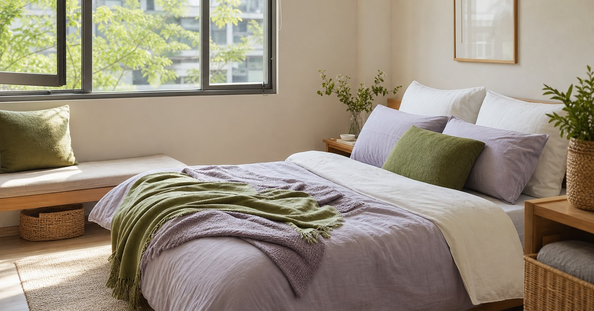

小宅睡眠空間整理：床包、枕頭、沙發墊與布品怎麼搭才不亂
小宅布品先控制數量、色系與清洗頻率，讓床包、枕頭和沙發墊有層次但不雜亂。

小宅臥室最容易被布品淹沒。床包一組、枕頭兩顆、沙發墊幾個、薄毯一條，看起來都是小東西，堆在一起卻會讓房間顯得擁擠。睡眠空間整理不是追求飯店感，而是讓床、窗邊和休息角落各自清楚。
先限制布品數量，再談搭配
小宅布品的第一個原則，是每一種功能都先留一到兩組輪替。床包枕套兩組、常用薄毯一條、沙發墊少量，通常就能支撐日常。數量超過清洗與收納能力，再漂亮也會變成壓力。
先把舊布品全部拿出來，分成正在使用、換洗備用、客用和可淘汰四類。若某件布品一年沒有被使用，或每次拿出來都覺得不搭，就不應繼續佔據最好的櫃位。
布品搭配的重點不是同花色，而是同一個房間裡的材質和色階不要互相打架。小宅尤其適合用兩個主色、一個點綴色，讓視覺有變化但不破碎。
若臥室已經有明顯木色、窗簾或地板顏色，床包就不必再搶主角。讓最大面積的布品保持安靜，再用枕套或小毯子做季節變化，小房間會更耐看。
- 床包枕套以兩組輪替為基礎。
- 薄毯和沙發墊先少量配置。
- 用兩個主色加一個點綴色。
床包先確認尺寸、包覆與清洗方式
蝦米寢具、CHIMGU 寢谷家居、雅各 Jacob、Arvo Home 和久賴家居，都可從床包、枕套、被套、涼被與布品方向參考。比較前先量床墊長寬高，並確認是否有保潔墊或薄墊，避免床包包覆不住。
材質則要回到清洗條件。家裡是否有烘衣、陽台是否通風、是否常流汗、是否有孩子或寵物，都會影響床包和枕套的輪替頻率。
本文不宣稱任何寢具能改善睡眠或健康狀況；選購應回到尺寸、材質、觸感、洗滌與收納，而不是期待單一布品解決所有休息問題。
枕頭與床包也要一起看高度與包覆。若枕頭很高、床包很鬆或被套太厚，床面每天都會難整理；比起多買一組新花色，先讓現有布品尺寸互相配合更實際。
Elite 嚴選
枕頭和沙發墊不要搶走床的主角位置
枕頭和沙發墊可以增加層次，但數量太多會讓床每天都難整理。小宅裡的床最好能在一分鐘內恢復整齊，否則再好的搭配都很難維持。
如果房間同時有小沙發或窗邊椅，沙發墊可以選和床包同色系但不同材質，讓空間有連貫感。不要每一個墊子都選不同圖案，視覺會很快變得吵雜。
枕頭也要分清楚睡眠使用和裝飾使用。真正會睡的枕頭看支撐、尺寸與清洗；裝飾抱枕則要看是否有地方收，不要睡前每天丟到地上。
- 床面每天要能快速整理。
- 沙發墊色系接近，材質可變化。
- 裝飾抱枕要有固定收納位置。
換季收納要處理濕氣和標示
小宅常缺櫃位，因此布品收納更要精準。換季前先洗淨、完全乾燥，再用透氣收納袋或固定箱子保存。沒有完全乾燥就收起來，隔季拿出來容易有異味。
收納袋外側請寫清楚內容：夏季床包、冬季被套、客用枕套、沙發墊套。標示會讓你少買重複品，也能在需要時快速找到。
若臥室濕氣重，布品不要囤太多。少量輪替、定期清洗和保持通風，比擁有很多組寢具更適合台灣常見的小宅環境。
讓床邊保留空白，房間才會安靜
臥室不是展示所有布品的地方。床邊保留一塊乾淨空白，會讓房間看起來更安定，也讓睡前收拾更簡單。若床上、椅上和地上都堆著布品，休息感會被削弱。
下次想買新床包或抱枕前，先問家裡是否有空間收納舊的那一組。若答案是否定的，新物件再漂亮，也可能只是替房間增加新的維護成本。
商品尺寸、材質、顏色與即時販售資訊請以下單前商品頁公告為準；布品觸感與舒適度因人而異，建議依個人使用習慣保守選擇。
若想讓房間有季節感，可以從枕套或薄毯這類小面積布品下手，而不是每季更換整套床包。小面積變化比較容易收納，也比較不會讓房間忽然變成另一種風格。
同主題品牌參考
FAQ
小宅寢具應該準備幾組？
多數情況可以先用兩組床包枕套輪替，再依季節補一條薄毯或涼被。若清洗和收納空間有限，不建議一開始買太多。
床包、枕頭和沙發墊一定要同花色嗎？
不需要。同色系比同花色更容易維持耐看。建議選兩個主色、一個點綴色，材質可有變化，但圖案不要過多。
寢具會改善睡眠嗎？
本文不做這類承諾。寢具選購應回到尺寸、材質、觸感、清洗和收納條件；若有睡眠或健康困擾，請諮詢合格專業人員。
下一步建議
先清點現有床包、枕頭與沙發墊，再依尺寸、色系與清洗頻率補布品。
重要警語
本文為一般居家與寢具整理參考，不宣稱改善睡眠或健康；商品尺寸、材質、洗滌與即時販售資訊請以商品頁公告為準。
本文含品牌／商品導購連結；若你透過部分商品連結前往選購，Elite Fashion 可能取得合作收益。本文仍以編輯判斷與使用情境整理為主，價格、規格、活動與庫存請以商品頁公告為準。